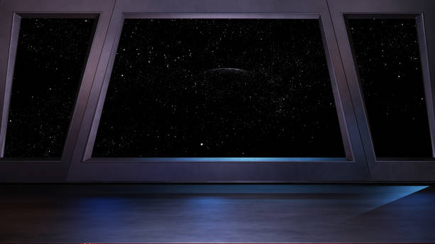

|  |
|
You hurriedly push the door ajar and step inside, only for the door to slide and clank shut. Before you get a look at your surroundings you turn around to inspect the damage. It looks as though the force has caused the door to become inoperable. Pressing your back to the door that has become part of the wall, you do a little detective work on where you now are. It appears to be a room with a single window. There is a crease in the glass that suggests force may break it. You automatically decide against that. Down and to your left, you can see there is a crawl space blocked by some electronic junk that lays strewn around. |